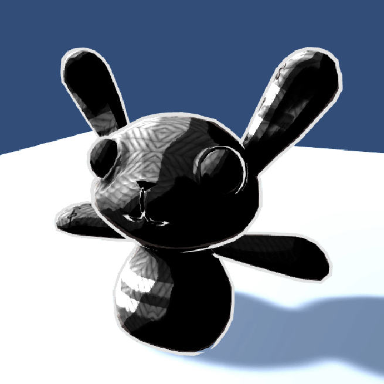

SimpToon Shader is a relatively simple alpha-enabled cutout vertex/fragment shader for Unity. SimpToon shader consists of 2 base passes, 1 additive pass, and 1 shadowcaster pass. The first base pass is the main draw (the Forward pass), handling ambient and the world directional light. The second base pass renders the (unlit/”emissive”) outline. The additive pass is for adding lighting from Unity Point Lights and uses the same fragment and vertex shader as the Forward base pass, and the shadow caster casts shadow.
A core part of writing this shader was not necessarily trying to make completely unique effects, but learning exactly how to write multipurpose shaders, and specifically shaders for Unity. This took a lot of analyzing existing Unity shaders, reading the Shaderlab documentation, and writing a lot of small “toy” shaders to experiment with different effects on their own as well as understanding the Unity lighting / render pipeline. The final shader started with a draft of outline code first, that is, figuring out what was going where. Looking at it now, it really does not seem like much in terms of technical complexity, but just planning how it would go all together was certainly one of the hardest parts of the whole process.
The general way the toon shading works is very much like Brandon’s Blinn Phong, with a lambertian diffuse as the main lighting function. However, tooning is now controllable with multiple levels, and the shade and lighting have their own colorable tints, which additional “tooning” calculations. The basic function of the tooning calculation is to split the diffuse level into separate levels (achieved by a round/floor function), and smooth it out with an additional Gradient term. A weighted average with the discretized toon level mixes the additional light and shading color into the base color, and the final mixing is parameterized with material properties that function as the variables in the linear interpolation between two color options.
Creating the cutout effect is achieved by the HLSL \(\texttt{clip(x)}\) function, which discards the pixel calculation if the argument is less than \(0\). More importantly is setting the Unity Render Queue for this shader to the proper level, so that the visible parts of the mesh are still rendered correctly on top of other geometry.
Outlines are done in a separate render pass after the Foward Base pass. Outlines work by rendering only the back of a slightly “expanded out” version of the mesh, with writing to the Z-buffer enabled which allows this second pass to overwrite any pixel in the frame buffer that should instead be an outline. This mesh expansion is parameterized by a shader property and happens in the vertex shader, where the returned vertex position used by the fragment shader is moved along its normal. A simple map allows precise control of what areas get outlines, discarding dark areas with the HLSL \(\texttt{clip(x)}\) function.
There are 2 core parts to the reflection: direct light reflection (specular) and indirect reflection. Specular is calculated primarily with the dot product of the view direction and the direction of the reflected light (assuming a perfectly reflective surface). Indirect reflection comes from the simulated environment, whether that be the lighting from the skybox (environment map), an alternately provided map, or of a matcap.
Rim lighting is calculated with the light “inverse” of the dot product of the view direction and the vertex normal, and modified as according to the material properties. This is actually how Brandon’s “outlines” (from Roystan’s tutorial) were implemented, but with a sharp cutoff. There are additional sliders that provide effect adjustment, such as the sharpness of the cutoff (achieved via smoothstep) and how deep along the rim light the cutoff occurs.
Emission works very simply: unlit color. Emission calculations are done at the end of the core fragment shader, and replace lit areas with perfect color. Emission effects, such as scrolling through the second emission mask or flashing effects, are done by modulating the intensity of the emission by some function with time, easily accessible as a built-in Unity shader property.
|
|

|

|

|

|

|